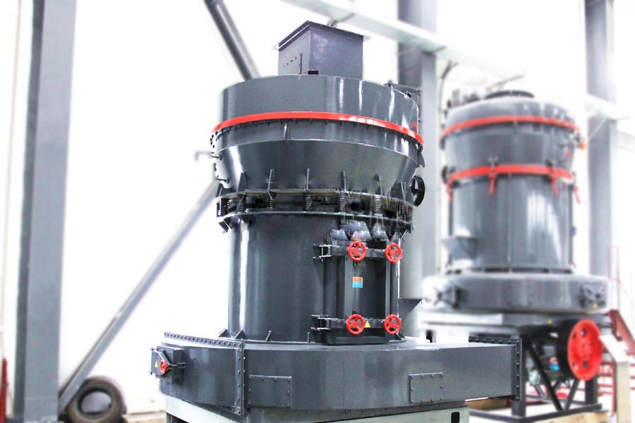
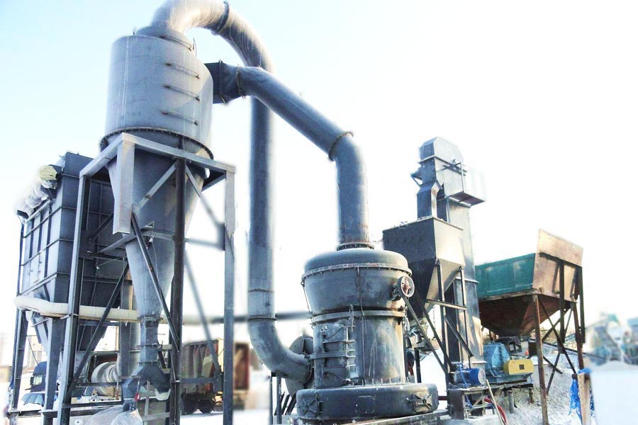

- Home >
- milling equipment >
- raymond mill manufacturer India

Construction waste crushing production line

Mobile construction waste crushing station for urban construction waste crushing.
raymond mill manufacturer India
raymond mill manufacturer India Description:
raymond mill manufacturer India, also known as Raymond, the mill uses advanced structure of similar products at home and abroad, and to update the industry on the basis of the improved design from Raymond, the device is higher than the mill efficiency, low power consumption It covers an area of small, one-time investment. Roller centrifugal force of the tightly compacted in the grinding ring, so when the roller, grinding ring wear to a certain thickness does not affect the yield and fineness of the finished product. Roller, grinding ring replacement cycle is long, thus excluding the wearing parts centrifugal mill short replacement cycle defects. Aircraft winnowing fan airflow in the grinding shell – Cyclone – circulation fan inside job, so less dust than the high-speed centrifugal mill, operating plant clean, environmental pollution.

R-type raymond mill manufacturer India is widely used in barite, calcite, potash feldspar, talc, marble, limestone, dolomite, fluorite, lime, activated clay, activated carbon, bentonite, kaolin, cement, phosphate rock, gypsum , glass, insulation materials and other Mohs hardness of not greater than 9.3, a high fine powder generation and processing humidity below 6% of non-flammable mineral, chemical, construction and other industries more than 280 kinds of materials, product size 80-325 mesh within the scope of any regulation, part of the material up to 600 mesh.
raymond mill technical parameters
| Model | 6R4525 | 5R4119 | 4R3216 | 3R90 | 3R85 | 3R75 | 3R65 | 3R60 |
| Parameters | 4R90 | 4R85 | ||||||
| Feed size（mm） | ≤30 | ≤25 | ≤25 | ≤25 | ≤20 | ≤20 | ≤15 | ≤15 |
| Finished size（mm） |
0.125- 0.044 |
0.125- 0.044 |
0.125- 0.044 |
0.125- 0.044 |
0.125- 0.044 |
0.125- 0.044 |
0.125- 0.044 |
0.125- 0.044 |
| Different materials fineness（t） | 16-120 | 8-60 | 4-45 | 3-35 | 2-28 | 1.5-20 | 1-18 | 0.5-8 |
| Center shaft speed（r/min） | 82 | 105 | 130 | 160 | 160 | 160 | 180 | 280 |
| Grinding ring diameter（mm） | 1770 | 1400 | 1073 | 973 | 885 | 865 | 725 | 495 |
| Roller diameter（mm） | 450 | 410 | 320 | 300 | 270 | 260 | 210 | 140 |
| Roller height（mm） | 250 | 190 | 160 | 160 | 150 | 150 | 150 | 100 |
| Host Motor |
Y315m- 4-132 |
Y280s- 4-75 |
Y225s- 4-37 |
Y225m- 8-30 |
Y225m- 8-22 |
Y225s- 8-18.5 |
Y200L- 8-15 |
Y160m- 6-7.5 |
| Fan motor |
Y315m- 4-132 |
Y250m- 4-75 |
Y200L- 4-37 |
Y180m- 4-22 |
Y160L- 4-15 |
Y160L- 4-15 |
Y160m- 4-11 |
Y132s- 2-5.5 |
| Motor analyzer |
Y160m- 4-11 |
Yc200- 4B-7.5 |
Yc120- 4a-5.5 |
Y112m- 6-2.2 |
Y112m- 6-2.2 |
Y112m- 6-2.2 |
Y112m- 6-2.2 |
Y90L- 6-1.1 |

Raymond mill Advantage
Process is simple, strong independence
High-strength mill using three-dimensional structure, small footprint, complete sets of strong, expect the finished powder independent self-contained production system from the block.
Fineness uniform, easy maintenance
Finished powder fineness uniform, through screening rate of 99%, which is difficult to have other milling equipment. Electrical system with centralized control, no one can achieve the basic milling plant operation, and easy maintenance.
High wear resistance, reliable operation
Important parts are made of high quality steel, wear-resistant parts are high-performance wear-resistant materials, the whole high wear resistance, the use of enclosed gear gearbox and pulleys, transmission smooth, reliable operation.
Raymond Mill Works
In operation, the required machine casing pulverized material from the side of the machine was added into the hopper, to rely on the host plum shelves suspended roller means around a vertical axis of revolution, while rotation itself, due to the centrifugal force during the rotation, roller swing outward, pressed on the grinding ring, so that the material sent to the shovel blade between the roller and grinding ring, due to the rolling mill rolls for rolling and achieve the purpose of the crushed material.
Leave Me A Message, Now
If you have any questions regarding equipment prices, production line configuration or other problems, you can send a message to us, we will contact you soon.